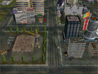
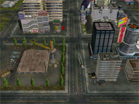

 Download this map for Generals Zero Hour or Generals
Minken: "This map has
potential!"
A very high-detailed 450x450 8-player map - 3000 objects (maximum allowed).
Some basic scripting of civilian units moving around in the city.
A police car (Larry's brother at the wheel?) is chasing some car thieves, so
watch out!
If you have the video card to play this map, you'll like it!
Sin City resides on a large island.
You will be pretty isolated when you start. Water separates you from your closest enemies. There are a number of bridges to cross the water and make your way into the city. The city has lots of buildings but offer wide streets to advance large forces. There are some chemical bunkers on this map that you can capture or just blow up in the face of your enemy.
You start out with one supply dock. There are oil derricks and oil refineries on the island as well as a hospital. Add 120.000 worth of supplies inside the city! You will also have a great advantage if you can secure any of the corners with the extra supply docks.
Minken: "Where the
#%&& did they come from!!!?"
No problem! The city will quickly turn into a battle zone, and everything will
go up in flames!
AI will capture everything it can lay hands on and move to the corners as well
as inside the city for extra supplies.